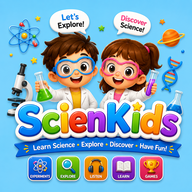

10 experimentos científicos fáciles para hacer en casa — y la ciencia que los explica
No hace falta un laboratorio para criar a un pequeño científico. Basta una cocina, unos vasos y diez minutos de curiosidad. El secreto no es el momento «¡guau!» en sí, sino lo que lo rodea: pedir al niño que prediga, observe con atención y explique. Aquí tienes diez experimentos seguros con materiales cotidianos, cada uno con una explicación sencilla que puedes adaptar a la edad de tu hijo.
- Convertir cualquier experimento en ciencia de verdad
- Los 10 experimentos
- Tabla de referencia rápida
- La seguridad, lo primero
- Preguntas que hacen pensar
1. Convertir cualquier experimento en ciencia de verdad
Sigue siempre los mismos cuatro pasos y tu hijo practicará el método científico sin darse cuenta:
- Preguntar: «¿Qué crees que va a pasar?»
- Predecir: el niño dice o dibuja su hipótesis antes de empezar. No hay predicciones equivocadas.
- Observar: mirad con atención. ¿Qué ha cambiado? ¿Qué sonidos, colores o movimientos has notado?
- Explicar: «¿Acertaste? ¿Por qué crees que ha pasado?»
2. Los 10 experimentos
1. El volcán burbujeante (desde 4 años)
Necesitas: una botellita o un vaso, 2 cucharadas de bicarbonato, un poco de lavavajillas, colorante rojo, medio vaso de vinagre y una bandeja. Haz: pon el bicarbonato, una gota de jabón y el colorante en el vaso sobre la bandeja y vierte el vinagre. Por qué: el vinagre (un ácido) reacciona con el bicarbonato (una base) y produce un gas, el dióxido de carbono. El jabón atrapa el gas en burbujas, así que la espuma sube y se desborda como la lava.
2. El agua que camina (desde 4 años)
Necesitas: tres vasos transparentes, papel de cocina, colorante rojo y azul. Haz: pon los vasos en fila; llena de agua los dos de los extremos, colorea uno de rojo y otro de azul, y deja vacío el del medio. Dobla dos tiras de papel y une cada vaso lleno con el vacío. Espera una hora. Por qué: el agua sube por los diminutos huecos del papel (capilaridad), «camina» hasta el vaso central y los colores se mezclan formando morado.
3. Pasas que bailan (desde 4 años)
Necesitas: un vaso transparente con agua con gas y unas pasas. Haz: echa las pasas y observa unos minutos. Por qué: las pasas primero se hunden; después las burbujas de gas se pegan a su superficie arrugada y las elevan como globitos. Arriba las burbujas explotan y las pasas vuelven a bajar, una y otra vez.
4. ¿Flota o se hunde? (desde 4 años)
Necesitas: un cuenco con agua y diez objetos pequeños: una moneda, un corcho, una manzana, una llave, una pieza de LEGO, una hoja, una cuchara, un lápiz de cera… Haz: clasifica los objetos en «se hundirá» y «flotará» antes de probar cada uno. Por qué: que algo flote depende de lo pesado que es para su tamaño (su densidad) comparado con el agua, no solo de su peso. Una manzana grande flota y una moneda pequeña se hunde, algo que sorprende a casi todos los niños.
5. La pimienta que huye (desde 5 años)
Necesitas: un plato con agua, pimienta molida, un bastoncillo y lavavajillas. Haz: espolvorea pimienta sobre el agua, mete un bastoncillo limpio (no pasa nada), luego mójalo en jabón y vuelve a tocar el agua. Por qué: la superficie del agua se comporta como una piel fina y elástica (tensión superficial). El jabón la debilita donde toca, así que la «piel» se retira hacia los bordes y arrastra la pimienta.
6. Una judía en un frasco (desde 5 años, alrededor de una semana)
Necesitas: un frasco transparente, papel de cocina o algodón, dos o tres judías secas y agua. Haz: forra el frasco con papel húmedo, coloca las judías entre el papel y el cristal, mantén el papel húmedo y observa cada día. Por qué: con agua y calor la semilla empieza a crecer (germinación). Tu hijo verá cómo la raíz baja y el tallo sube, sin importar cómo se colocó la judía. Tumba el frasco unos días después y observa cómo cambian de dirección.
7. Haz un arcoíris (desde 6 años)
Necesitas: un vaso de agua, una ventana soleada y una hoja blanca. Haz: pon el vaso en el alféizar a pleno sol y mueve la hoja por el suelo hasta que aparezca un pequeño arcoíris. Por qué: la luz blanca del sol es una mezcla de colores. Al atravesar el agua, cada color se desvía un poco distinto (refracción), así que los colores se separan, igual que en un arcoíris de verdad después de la lluvia.
8. El globo mágico (desde 6 años)
Necesitas: un globo, trocitos de papel de seda y un chorrito fino de agua del grifo. Haz: frota el globo en el pelo o en un jersey de lana durante 20 segundos y acércalo a los papelitos y luego al chorro de agua. Por qué: al frotar, pasan diminutas cargas eléctricas al globo (electricidad estática). El globo cargado atrae los papelitos e incluso curva el chorro de agua sin tocarlo.
9. El huevo que flota (desde 7 años)
Necesitas: dos vasos de agua, sal y dos huevos crudos. Haz: disuelve de 6 a 8 cucharadas de sal en uno de los vasos. Introduce con cuidado un huevo en cada vaso. Por qué: la sal hace el agua más densa. En agua normal el huevo es más denso que el agua y se hunde; en agua muy salada, el agua es más densa que el huevo y este flota. Por eso también se flota más fácilmente en el mar que en la piscina.
10. Una lámpara de lava casera (desde 7 años, con un adulto)
Necesitas: una botella transparente, agua, aceite de cocina, colorante y una pastilla efervescente (como una vitamina efervescente). Haz: llena un cuarto de la botella con agua, añade unas gotas de colorante y completa casi hasta arriba con aceite. Espera a que se separen las capas y echa un trozo de pastilla. Por qué: el aceite y el agua no se mezclan, y el aceite flota porque es menos denso. La pastilla produce burbujas de gas que suben el agua coloreada a través del aceite; arriba el gas escapa y las gotas vuelven a caer.
3. Tabla de referencia rápida
| Experimento | Edades | Tiempo | Gran idea |
|---|---|---|---|
| Volcán burbujeante | 4+ | 10 min | Las reacciones químicas producen gas |
| El agua que camina | 4+ | 1 hora | Capilaridad, mezcla de colores |
| Pasas que bailan | 4+ | 10 min | Burbujas de gas y flotación |
| ¿Flota o se hunde? | 4+ | 15 min | Densidad |
| La pimienta que huye | 5+ | 5 min | Tensión superficial |
| Judía en un frasco | 5+ | 1 semana | Cómo crecen las semillas |
| Haz un arcoíris | 6+ | 10 min | La luz y los colores |
| El globo mágico | 6+ | 10 min | Electricidad estática |
| El huevo que flota | 7+ | 10 min | Densidad y sal |
| Lámpara de lava | 7+ | 15 min | Líquidos que no se mezclan |
4. La seguridad, lo primero
- Siempre debe haber un adulto presente, sobre todo con niños pequeños y en los experimentos 9 y 10.
- Nunca se prueba nada durante un experimento, aunque sean ingredientes de cocina.
- Mantén el vinagre, el jabón y el agua salada lejos de los ojos, y lavaos las manos al terminar.
- Trabajad sobre una bandeja o al aire libre, y guarda las pastillas efervescentes fuera del alcance de los niños.
- Lava bien las manos y las superficies después de manipular huevos crudos.
5. Preguntas que hacen pensar
El mejor aprendizaje científico ocurre conversando. Después de cada experimento, prueba con una de estas preguntas:
- «¿Qué pasaría si usáramos el doble?»
- «¿Qué podríamos cambiar para que fuera más rápido, más lento o más grande?»
- «¿Dónde has visto esto en la vida real?» (Las burbujas de un refresco, un arcoíris después de la lluvia.)
- «¿Cómo podríamos comprobar que tu explicación es correcta?»
Más ciencia en Kids Learning Hub
Comprueba lo que ha aprendido tu hijo con nuestro Quiz de ciencias gratuito y encuentra más ideas en nuestro artículo sobre cómo criar pequeños científicos.

Explora el cuerpo humano, las plantas, los animales, el espacio y más con juegos y experimentos interactivos — sin conexión y gratis.
Elige un experimento para este fin de semana, deja que tu hijo haga su predicción y pregunta «¿por qué?» al final. La curiosidad crece cada vez que una pregunta se toma en serio.
Preguntas frecuentes
¿Cuáles son los experimentos científicos más fáciles para niños pequeños?
Entre los 4 y los 6 años, prueba el volcán de bicarbonato, el agua que camina con papel de cocina, las pasas que bailan en agua con gas y flota o se hunde con objetos de casa. Usan materiales de cocina y dan resultados rápidos y visibles.
¿Cómo hago que un experimento en casa sea educativo?
Pide a tu hijo que prediga qué pasará antes de empezar, que observe con atención y que luego explique si acertó y por qué. Un cuaderno sencillo con pregunta, predicción, dibujo y explicación desarrolla un pensamiento científico real.
¿Son seguros para los niños los experimentos de cocina?
Sí, con un adulto presente. No se prueba nada, se mantiene el vinagre, el jabón y el agua salada lejos de los ojos, se trabaja sobre una bandeja, se lavan las manos al final y las pastillas efervescentes se guardan fuera de su alcance.